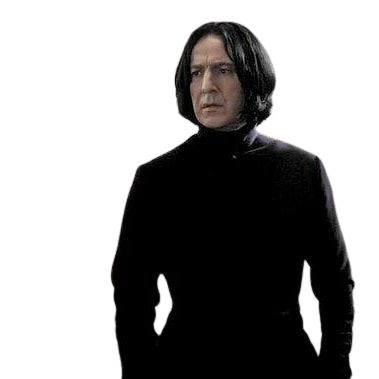

Slytherins Importantes

Caracterizada por la ambición, la astucia y la herencia pura fundada por Salazar Slytherin. Sus colores son verde y plateado, y está representada por una serpiente. Su fantasma es El Barón Sanguinario. Su sala común está en las mazmorras debajo del lago a través de las tres piedras se accede por una puerta disimulada en un muro de piedra, diciendo una contraseña, su contraseña en el segundo año era sangre pura.
Informacion con Rubeus Hagrid.